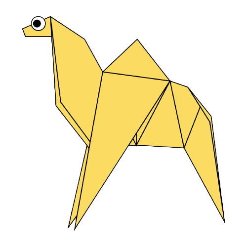
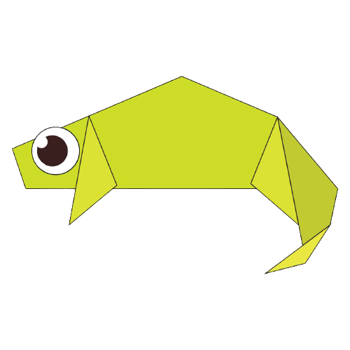
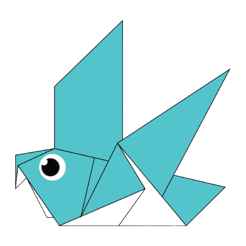

Origami Designs
About Us
Follow Us

Interesting facts about Camels
- Camel's ears are furry
- Camels can easily walk around on sand, thanks to their large-surfaced feet
- When camels find water they will drink as much of it as possible

Interesting facts about Chameleons
- Chamelons are reptiles that are part of the iguana suborder
- Changing skin colour is an important part of communication among chameleons
- Most chameleons have a prehensile tail that they use to wrap around tree branches

Interesting facts about Pigeons
- Pigeons are incredibly complex and intelligent animals
- Pigeons are renowned for their outstanding navigational abilities
- They also have excellent hearing

Interesting facts about Pandas
- Pandas can live on a bamboo diet alone
- China owns all the pandas in the world
- China sees the panda as a symbol of freindship and peace

Interesting facts about Cicadas
- Cicadas are known for their singing, and their violin shaped body structure
- Cicadas are cold-blooded in nature, but they need to warm up to fly and sing.
- It is not easy to loacate cicadas

Interesting facts about Bears
- There are 8 species of bears in the world
- They mostly eat grasses, herbs and fruit, but will sometimes eat other things, including fish.
- Bears have an average life span of 20-35 years